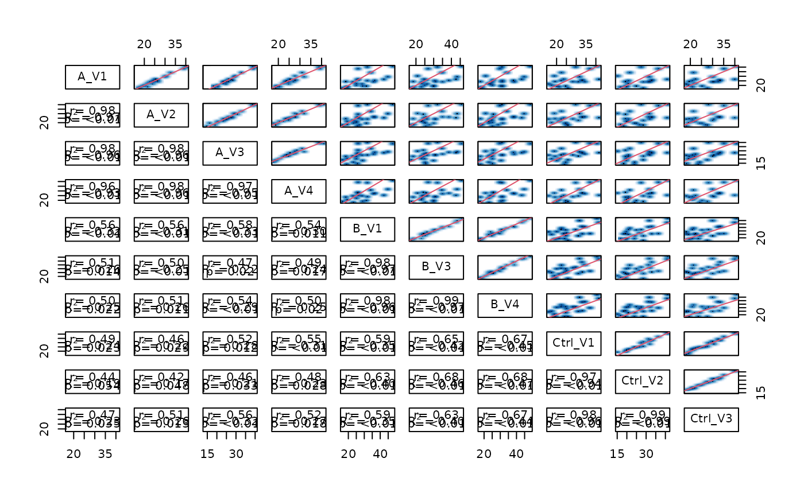
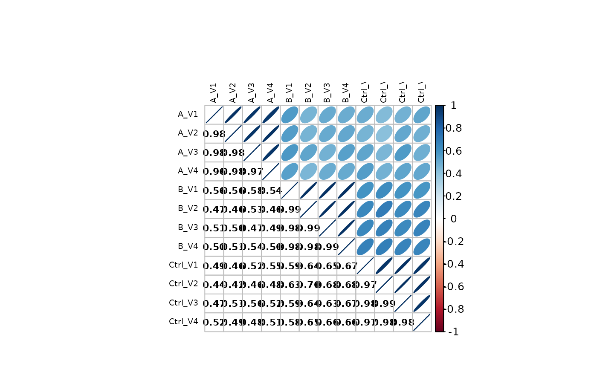

LFQDataPlotter —- Create various visualization of the LFQdata
Source:R/LFQDataPlotter.R
LFQDataPlotter.RdLFQDataPlotter —- Create various visualization of the LFQdata
LFQDataPlotter —- Create various visualization of the LFQdata
Public fields
lfqLFQData object
prefixprefix to figure names when writing, e.g. protein_
file_paths_pdfwith paths to figures
file_paths_htmlwith paths to figures
Methods
Method raster()
plot intensities in raster
Usage
LFQDataPlotter$raster(
arrange = c("mean", "var"),
not_na = FALSE,
rownames = FALSE,
max_rownames_chars = 60,
max_sample_label_chars = 20
)Arguments
arrangearrange by either mean or var
not_naTRUE arrange by number of NA's, FALSE by arrange by intensity
rownamesshow rownames (default FALSE - do not show.)
max_rownames_charsmaximum displayed row label length
max_sample_label_charsmaximum displayed sample label length. Labels keep their suffix because sample prefixes are often shared.
Method heatmap()
heatmap of intensities - columns are samples, rows are proteins or peptides.
The abundances of each protein (row) are z-scored. Afterward, the mean abundance for each protein is zero, and the standard variation is one. z-scoring allows to compare (cluster) the proteins according to the difference in the expression in the samples. Without the z-scoring, the proteins would group according to their abundance, e.g., high abundant proteins would be one cluster.
Usage
LFQDataPlotter$heatmap(
na_fraction = 0.3,
rownames = FALSE,
max_rownames_chars = 60,
max_sample_label_chars = 20
)Method heatmap_cor()
heatmap of sample correlations.
The Spearman correlation among all samples is computed. Then the euclidean distance is used to compute the distances.
Method pca()
PCA plot
A PCA is applied and the first and second principal component are shown.
Features with missing values are removed. For PCA with all features,
impute first using impute_with_zcomp.
Usage
LFQDataPlotter$pca(PC = c(1, 2), add_txt = TRUE, nudge = 0.1)Method missigness_histogram()
histogram of intensities given number of missing in conditions
Method intensity_distribution_density()
density distribution of intensities
Method intensity_distribution_violin()
Violinplot showing distribution of intensities in all samples
Method pairs_smooth()
pairsplot of intensities
Method write_pdf()
write figure to pdf
Method write()
write heatmaps and pca plots to files
Examples
istar <- sim_lfq_data_peptide_config()
#> creating sampleName from file_name column
#> completing cases
#> completing cases done
#> setup done
lfqdata <- LFQData$new(
istar$data,
istar$config)
lfqplotter <- lfqdata$get_Plotter()
stopifnot(class(lfqplotter$heatmap()) == "pheatmap")
stopifnot(class(lfqplotter$heatmap_cor()) == "pheatmap")
stopifnot("ggplot" %in% class(lfqplotter$pca()))
#> PCA: removed 16 of 28 features with missing values. For PCA with all features, impute first using impute_with_zcomp().
#> Joining with `by = join_by(sampleName)`
stopifnot("plotly" %in% class(lfqplotter$pca_plotly()))
#> PCA: removed 16 of 28 features with missing values. For PCA with all features, impute first using impute_with_zcomp().
#> Joining with `by = join_by(sampleName)`
tmp <- lfqplotter$boxplots()
stopifnot("ggplot" %in% class(tmp$boxplot[[1]]))
stopifnot("ggplot" %in% class(lfqplotter$missigness_histogram()))
#> isotopeLabel ~ group_
stopifnot(class(lfqplotter$na_heatmap()) == "pheatmap")
#> rows with NA's: 16; all rows :28
class(lfqplotter$intensity_distribution_density())
#> [1] "ggplot2::ggplot" "ggplot" "ggplot2::gg" "S7_object"
#> [5] "gg"
class(lfqplotter$intensity_distribution_violin())
#> [1] "ggplot2::ggplot" "ggplot" "ggplot2::gg" "S7_object"
#> [5] "gg"
stopifnot(is.null(lfqplotter$pairs_smooth()))

stopifnot(class(lfqplotter$sample_correlation()) == "list")

stopifnot(class(lfqplotter$raster()) == "pheatmap")
stopifnot("upset" == class(lfqplotter$upset_missing()))
#> Warning: `aes_string()` was deprecated in ggplot2 3.0.0.
#> ℹ Please use tidy evaluation idioms with `aes()`.
#> ℹ See also `vignette("ggplot2-in-packages")` for more information.
#> ℹ The deprecated feature was likely used in the UpSetR package.
#> Please report the issue at <https://github.com/hms-dbmi/UpSetR/issues>.
#> Warning: Using `size` aesthetic for lines was deprecated in ggplot2 3.4.0.
#> ℹ Please use `linewidth` instead.
#> ℹ The deprecated feature was likely used in the UpSetR package.
#> Please report the issue at <https://github.com/hms-dbmi/UpSetR/issues>.
#> Warning: The `size` argument of `element_line()` is deprecated as of ggplot2 3.4.0.
#> ℹ Please use the `linewidth` argument instead.
#> ℹ The deprecated feature was likely used in the UpSetR package.
#> Please report the issue at <https://github.com/hms-dbmi/UpSetR/issues>.
wide <- lfqdata$data_wide(as.matrix = TRUE)
stopifnot(class(prolfqua::plot_sample_correlation(wide$data)) == "list")